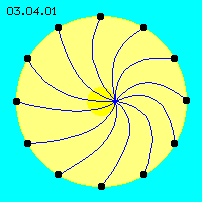
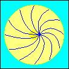
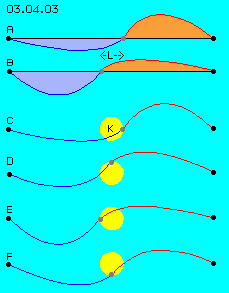
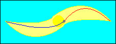

| Alfred Evert | 2003-04-09 |
03.04. Swinging Disc
Steal Spring
Within the aether exist neither grid-lines nor border surfaces, however these (fictive) twisted tracks show, which kind of aether movements can only occur: all times only by more or less bending. Movements within the aether are possible anywhere - however only into directions of both coupled movements.
In order to discuss the possibilities of movements step by step, here at first are discussed the movements only within one surface, thus only two-dimensional. Demanded movements into third dimension are discussed at following chapters. Above this, at first this area of local movements is assumed to be stationary within the universe. The wandering of these ´whirlpools´ through the aether universe is discussed some later.
Outside Calmness, inside Motion 
At picture 03.04.01 is shown the opposite principle of local movements within the aether. Black points at outer circumference represent Free Ether. These aetherpoints are only ´trembling´ at spiral cluster tracks of universal aether movement, by very small distances. So these points here are called relative stationary resp. ´resting aether´.
Each aetherpoint is located directly besides its neighbouring points. Neighbouring points here are marked by bended connecting lines. These curves more or less bended meet at one point. Within three-dimensional space, all connecting lines show same length (only here at two-dimensional view top down these lines appear of different lengths).
If now a strongly bended curve should become less bended, the connecting line of opposite side must become stronger bended. Point of intersection of all curves thus can be moved at central marked circle, while all outside (black) points are not involved.
These are decisive characteristics of all local movements within the aether: motion within an area is well possible, while the border of the area keeps stationary. All times, near to the centre of the area is much more motion than at outer parts of the area. It will never occur a rotating around, but only swinging movements at circled tracks are possible.

Sea Waves Roundabout
The ´wave´ of the water surface here is swinging around the central marked circle. The differing distances between calm area outside and central area in motion are equalised by the swinging of the connection-curves differently bended.
Nucleus and Balancing Area
These balancing areas outward to the resting aether is much larger than the core. Here, the bending of connecting lines and the central nucleus of motion are extremely overdrawn in the graphs. In reality, the connecting curves are only minimum differing and the balancing area is wider than the core by many scales (e.g. like the diameters of the Sun in relation to whole Sun system).

At A the connecting line left side is bended only little bit (thus is relative long stretched), the connecting line right side is bended stronger (thus is relative short). The observed point is shifted a little bit to right side.
At B both bendings have changed and the observed point is shifted to left side by the distance L. Thus a linear movement would occur. As every bending is possible only into two directions same time, this point won´t move linear but at circled track (K). Four situations of this movement are shown at this picture at C to F. Following animation visualizes this movement process.
Also here it´s obvious, not only the aetherpoints near to the centre are moving, but all points at the connecting curves are dislocated (and all neighbouring points round about, here not marked). On the other hand it´s obvious, the movements are symmetric to the centre (by view top down), however not symmetric to the straight line between opposite points of resting aether. The area of movement of this connecting line as a whole is marked by light yellow.
Additional or Essential 
Within the part-less aether however, the existence and behaviour of movements at areas outside of the nucleus are absolute necessary facts, not only additional abstract aspects but real (mechanical) motions. Within the gap-less coherent aether, these processes in wide surrounding areas all times are as essential like the movements within the narrow core of all motions.
Previous pictures show movements only at two dimensions. Next chapter now are discussed the movement pattern within all three dimensions.
At previous chapter was shown, local movement within the aether can only occur into two directions same time. The example of the cylinder with its twisted connecting lines and its bended longitudinal axis are comparable to a steal spring. The windings of spring can be more or less narrow to each other, each change of shape however would be inevitably combined with corresponding bending of the longitudinal axis.
The comparison of sea waves is to mention once more, like earlier discussed e.g. at picture 03.02.01. All outside resting points correspond to ´stationary waters´, far below the water surface. From there, bended connecting lines guide upwards to the surface. Here, the whole water surface is concentrated within one point of intersection, i.e. these sea waves fictively are arranged around that centre.
An other characteristic criteria of local aether movements becomes obvious: there is a centre of motion (here marked by central circled surface), however there is much more motion demanded within far reaching surrounding area (like sea waves at the water surface represent only small a part of all involved waters in motion).
At picture 03.04.03 the dislocation of bended connecting lines is shown once more. Here only one connecting line is drawn by view top down, i.e. without its bending into third dimension. The black points left and right side represent Free Ether (relative stationary), one point at the centre is watched during its motion.
03.05. Circulating Wave
Aether-Physics and -Philosophy